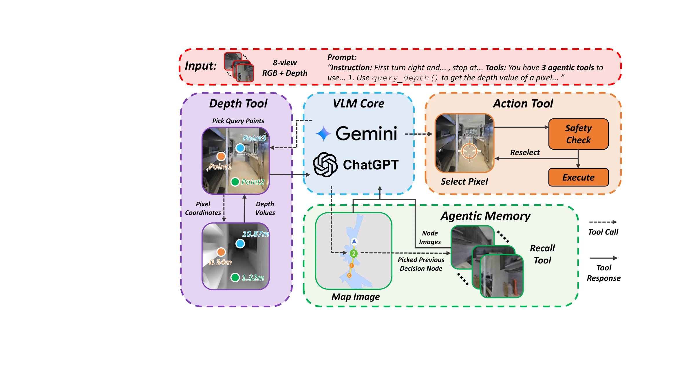
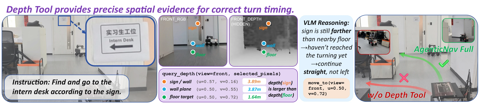
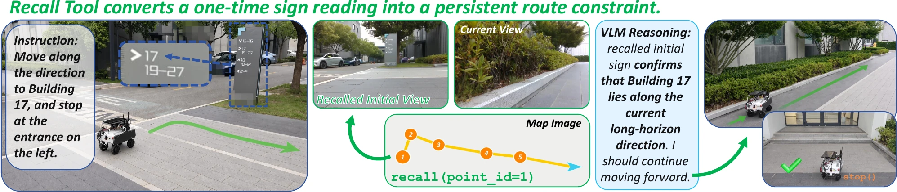

On-demand depth
Request metric depth and a motion preview at selected pixels instead of parsing a dense depth map.
1Shanghai Jiao Tong University 2Yinwang Intelligent Technology Co., Ltd. *Corresponding author
query_depth
inspect metric evidence
recall
retrieve only what matters
move_to
select any visible pixel
stop
finish at the goal
Zero-shot vision-and-language navigation in continuous environments (VLN-CE) has recently become feasible with large vision-language models (VLMs). However, existing methods typically rely on learned waypoint predictors to propose navigable actions. This severely limits the model's action space and fails to leverage depth inputs effectively. Moreover, memory is commonly handled by accumulating long textual or visual histories with substantial irrelevant context, or by retrieving cross-episode experiences, which weakens the zero-shot setting.
We present AgenticNav, a lightweight navigation harness that exposes action, depth, and memory as callable tools. The action tool lets the VLM select a target pixel directly; the depth tool returns precise metric evidence only where needed; and agentic memory pairs a compact trajectory map with selective visual recall. AgenticNav establishes new state-of-the-art performance among zero-shot methods on R2R-CE under same-backbone comparisons, while real-world experiments demonstrate strong zero-shot generalization.
The VLM decides what evidence it needs; deterministic tools handle geometry, memory retrieval, and safety.
Request metric depth and a motion preview at selected pixels instead of parsing a dense depth map.
Keep a compact trajectory map in context and retrieve past views only when they become relevant.
Choose any visible target point, then convert it into safe, executable continuous motion.

Best zero-shot SR on the shared 100-episode R2R-CE val_unseen protocol with GPT-5.5.
Higher path efficiency without a trained waypoint predictor.
Improvement over the SmartWay-GPT-5.5 reproduction, from 44% to 55%.
Four-view AgenticNav doubles the SmartWay baseline across 30 real-world episodes.
All values and comparison conditions are taken from the latest arXiv manuscript. See the paper for the complete tables, metrics, and protocol details.



@article{li2026agenticnav,
title = {AgenticNav: Zero-Shot Vision-and-Language Navigation as a Tool-Calling Harness},
author = {Li, Yijian and Li, Changze and Shi, Hantian and Luo, Jiaying and Cai, Jiyuan and Yang, Ming and Qin, Tong},
journal = {arXiv preprint arXiv:2606.10577},
year = {2026}
}